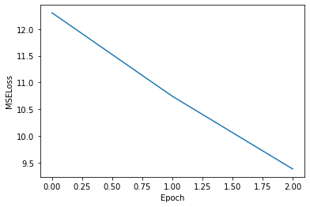
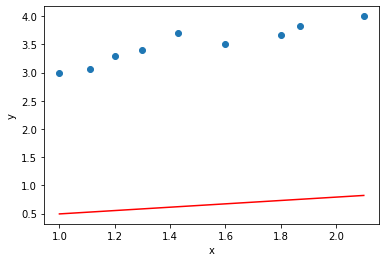

Esercitazione 1#
In questa sezione ci sono i principali esercizi fatti nella prima esercitazione di laboratorio.
import torch
import matplotlib.pyplot as plt
from sklearn import datasets, linear_model
from sklearn.metrics import mean_squared_error, r2_score
#from jupyterthemes import jtplot
#jtplot.style(theme='monokai', context='notebook', ticks=True, grid=False)
%matplotlib inline
dataset = torch.tensor([[1,3],
[1.11, 3.06],
[1.2, 3.3],
[1.3, 3.4],
[1.43, 3.7],
[1.6, 3.5],
[1.8, 3.66],
[1.87, 3.82],
[2.1,4]], dtype = torch.float)
# nel dataset ci sono i punti a 2 coordinate
x = dataset[:,0] # we select the first feature of all points (variabile indipendente)
y = dataset[:,1] # we select the second feature of all points (variabile dipendente)
Gradient Descent#
params = torch.zeros(2, requires_grad = True)
def model(x,params):
a,b = params
return(a*x+b)
def mse(y,y_predict):
return ((y-y_predict)**2).mean()
# Creo algoritmo
learning_rate = .01
losses = []
As = []
bs = []
for epoch in range(3):
if params.grad is not None:
params.grad.zero_() # metodo per annullare un tensore
y_predicted = model(x, params)
loss = mse(y_predicted, y)
loss.backward()
As.append(float(params[0]))
bs.append(float(params[1]))
losses.append(float(loss))
with torch.no_grad():
params -= learning_rate * params.grad
print("a, b, c =", params, "\nLoss: ", losses[-1])
a, b, c = tensor([0.2979, 0.1962], requires_grad=True)
Loss: 9.378692626953125
plt.plot(losses)
plt.xlabel("Epoch")
plt.ylabel("MSELoss")
plt.show()

y_predicted = model(x, params).detach() # we detach the values of a and b from their gradient
# con detach lo stacchi dall'albero
plt.scatter(x, y)
plt.plot(x, y_predicted, color = "red")
plt.xlabel("x")
plt.ylabel("y")
plt.show()

Linear regression - diabetes#
from sklearn.datasets import load_diabetes # importiamo il dataset
diabetes = load_diabetes()
# we import the diabetes dataset
X = torch.tensor(diabetes.data, dtype = torch.float) # features
y = torch.tensor(diabetes.target, dtype = torch.float) # label (dopo quanto tempo peggiora la malattia)
number_sample_train = 150
y = y / y.max() # normalizziamo le labels per avere Loss che non esplodano
def calcola_pseudo_inv(X,lambda_reg=0):
n = X.shape[1]
pseudo_inv = torch.matmul((torch.inverse(torch.matmul(X.T,X)+lambda_reg*torch.eye(n))),X.T)
return(pseudo_inv)
def calcola_w_ML(X,y,lambda_reg=0):
A = calcola_pseudo_inv(X,lambda_reg)
w_ML = torch.matmul(A,y)
return(w_ML)
def predict(X,w): # regressione lineare, data la design matrix e vettore parametri
y_predict = torch.matmul(X,w)
return(y_predict)
# errore con ridge regression
def errore(y,y_predict,w,lambda_reg=0):
m = len(y)
diff = y-y_predict
err = (torch.matmul(diff.T,diff)+lambda_reg*torch.matmul(w.T,w))/m
return(err)
def r2(y,y_predict):
RSS = ((y-y_predict)**2).sum()
TSS = ((y-y.mean())**2).sum()
r2 = 1- RSS/TSS
return(r2)
bias = torch.tensor([[1]]*X.size()[0])
Design_Matrix = torch.cat((X,bias),1)
D_train, D_test = Design_Matrix[:number_sample_train], Design_Matrix[number_sample_train:]
y_train, y_test = y[:number_sample_train], y[number_sample_train:]
w_ML = calcola_w_ML(D_train,y_train,lambda_reg=0)
y_predict = predict(D_test,w_ML)
err_T = errore(y_train,torch.matmul(D_train,w_ML),w_ML,lambda_reg=0)
err_g = errore(y_test,y_predict,w_ML,lambda_reg=0)
Sklearn Linear Regression#
diabetes_X_train, diabetes_X_test = X[:number_sample_train], X[number_sample_train:]
diabetes_y_train, diabetes_y_test = y[:number_sample_train], y[number_sample_train:]
regr = linear_model.LinearRegression()
ridge = linear_model.Ridge()
regr.fit(diabetes_X_train, diabetes_y_train)
diabetes_y_pred = regr.predict(diabetes_X_test)
# provo Ridge regression via Sklearn
ridge.set_params(alpha=0) # alpha è quello che io ho chiamato lambda_reg
ridge.fit(diabetes_X_train, diabetes_y_train);
Confronto tra i risultati#
print("Coefficienti linear model sklearn: \n", regr.coef_)
print('')
print('''Coefficienti mio algoritmo:
''',w_ML)
print('')
print("Coefficienti Ridge regression: \n", ridge.coef_)
print('')
Coefficienti linear model sklearn:
[-0.1946023 -1.0693307 1.2887858 0.9378546 0.2575962 -1.0704414
-0.7617573 0.35604006 1.6735233 0.259839 ]
Coefficienti mio algoritmo:
tensor([-0.1946, -1.0693, 1.2888, 0.9379, 0.2575, -1.0703, -0.7617, 0.3560,
1.6736, 0.2598, 0.4420])
Coefficienti Ridge regression:
[-0.19460189 -1.06932957 1.28878518 0.93785423 0.25759546 -1.07044043
-0.7617567 0.3560407 1.67352304 0.25983869]